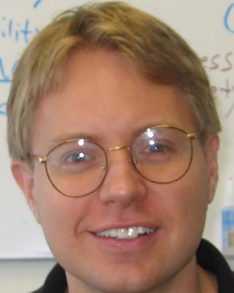

|  |
Mark G. Core
USC Institute for Creative Technologies |
email: my-last-name <AT>ict.usc.edu
My Ph.D. work at the University of Rochester focused on natural language understanding (NLU) in the context of dialogue, and included analysis of problem-solving dialogues using DAMSL, Dialog Act Markup in Several Layers. See the Univ. of Rochester section of my publications for more details. At the University of Edinburgh, I continued my work on NLU and discourse analysis in the context of tutorial dialogue. See the Univ. of Edinburgh section of my publications for more details. In 2004, I moved to USC's Institute for Creative Technologies where I have been working more generally in applied artificial intelligence.